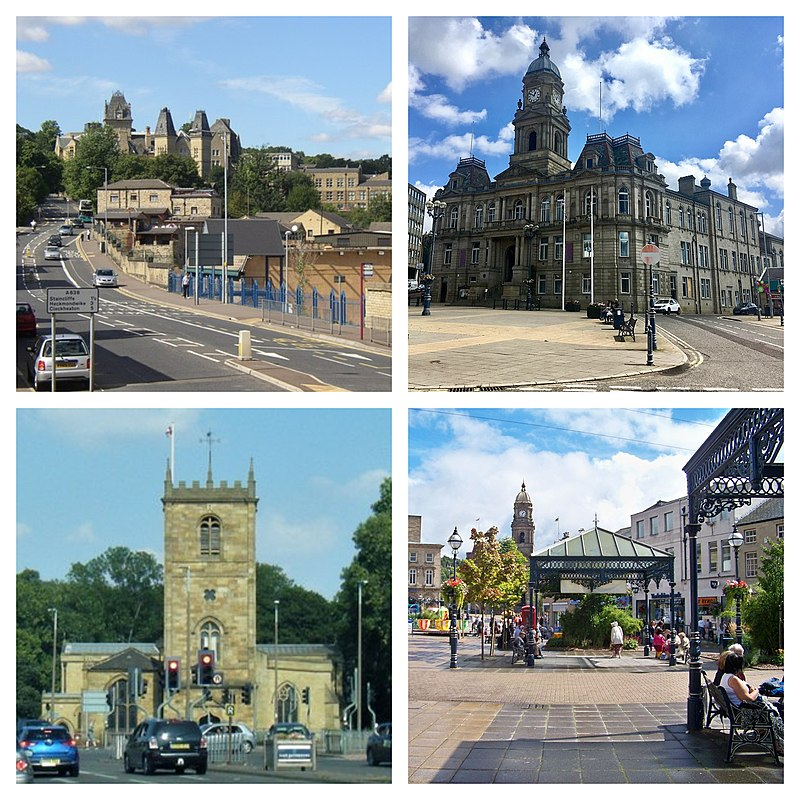

Dewsbury is a minster and market town in the Metropolitan Borough of Kirklees in West Yorkshire, England. It lies on the River Calder and on an arm of the Calder and Hebble Navigation waterway. It is to the west of Wakefield, east of Huddersfield and south of Leeds. Crime and Safety in Dewsbury, West Yorkshire. Dewsbury is the second safest major town in West Yorkshire, and is among the top 20 most dangerous overall out of West Yorkshire's 118 towns, villages, and cities. The overall crime rate in Dewsbury in 2021 was 124 crimes per 1,000 people.
Dewsbury is situated between Leeds and Bradford 8 miles (13 km) to the north, Huddersfield a similar distance to the south west, and Wakefield 6 mi (10 km) east. Its proximity to these major urban centres, the M1 and M62 motorways and its position on the Huddersfield Line, served by the TransPennine Express, have contributed to its growth. Junction of Northgate and Halifax Road Dewsbury is part of the West Yorkshire Urban Area, although its natural boundaries are not well-defined, with built up areas of the town running into Batley, Heckmondwike and Ossett. Geologically, the town is situated on rocks of the Carboniferous Period, consisting of coal measures and gritstones. Quaternary Period rock, glacial deposits and gravels exist in the Calder Valley. Coal, sandstone and gravel have been exploited commercially. Average rainfall is 100 cm per annum.[22] The town is dominated by hills, notably Earlsheaton, Dewsbury Moor, Staincliffe and Thornhill. The town centre is between 130 and 180 feet (40 and 55 metres) above sea level, rising to 360 ft (110 m) at Earlsheaton and Batley Carr, and 755 ft (230 m) at Grange Moor. The approach from Earlsheaton through the Wakefield Road cutting, constructed in 1830[citation needed], is dramatic with the view of the town centre in the Calder Valley opening up.